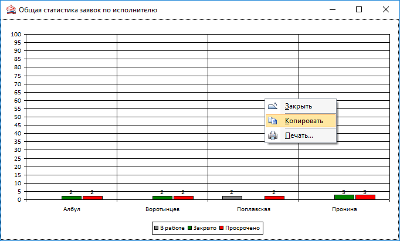
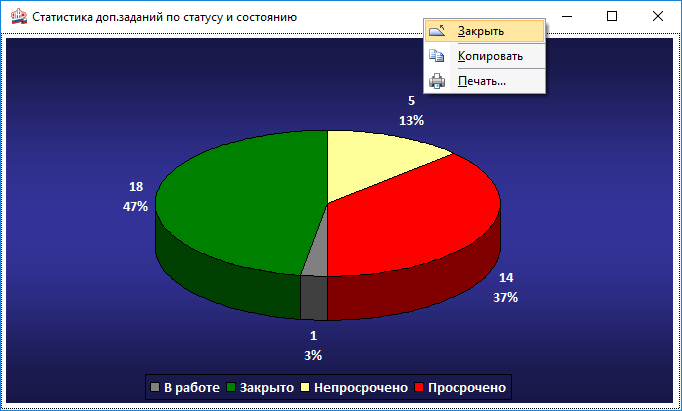
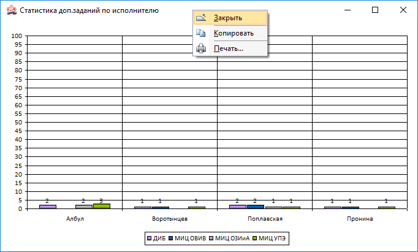
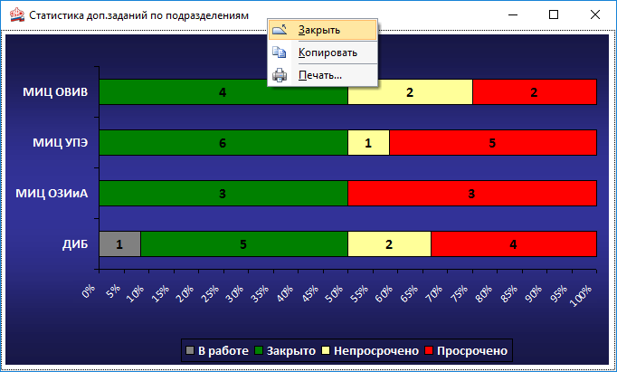
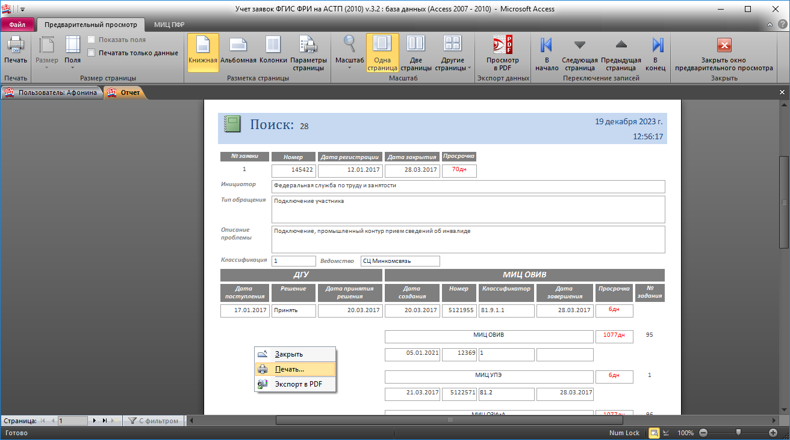
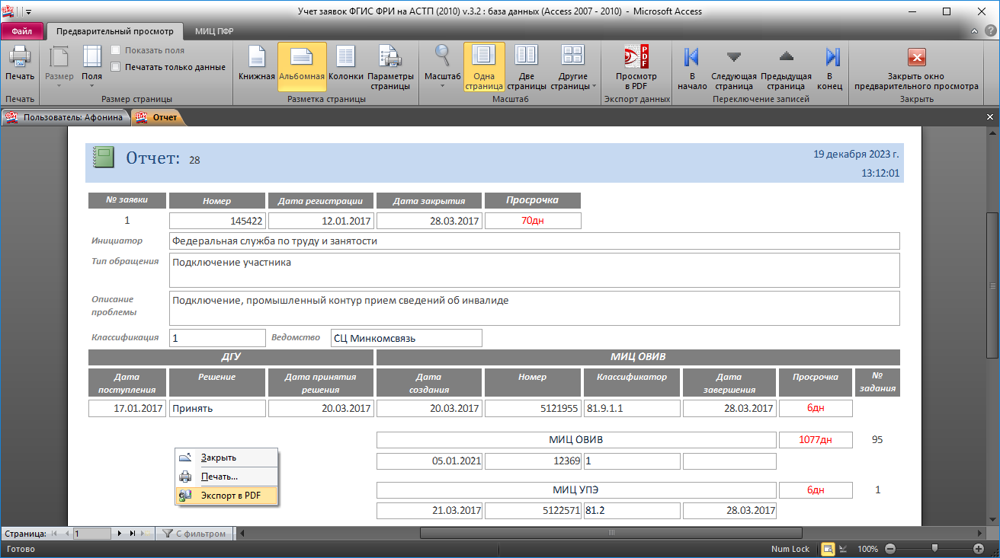

Статистика и отчет
Вывод статистической отчетности формируется на основе критериев по полям в поисковом запросе.
Формирование статистики осуществляется в разных формах вывода:
-
1. В виде графика;
-
2. В виде диаграмм.
Отчет формируется в двух вариантах:
-
1) Книжный;
-
2) Альбомный.
В зависимости от выбранной ориентации сформированный отчет можно так же вывести на просмотр, сохранение и печать в режиме PDF.
Иллюстрация:
-
– демонстрация данных о статистике;
-
 – демонстрация вывода данных под отчет;
– демонстрация вывода данных под отчет;
-
– демонстрация вывода данных на просмотр, сохранение и печать в режиме PDF.
×
График № 1
(на основе выборки в поисковом запросе)">
Диаграмма № 2
(на основе выборки в поисковом запросе)">
График № 2
(на основе выборки в поисковом запросе)">
Диаграмма № 3
(на основе выборки в поисковом запросе)">
×
Отчет в книжном варианте
(на основе выборки в поисковом запросе)">
Отчет в альбомном варианте
(на основе выборки в поисковом запросе)">

Комментарии (0)